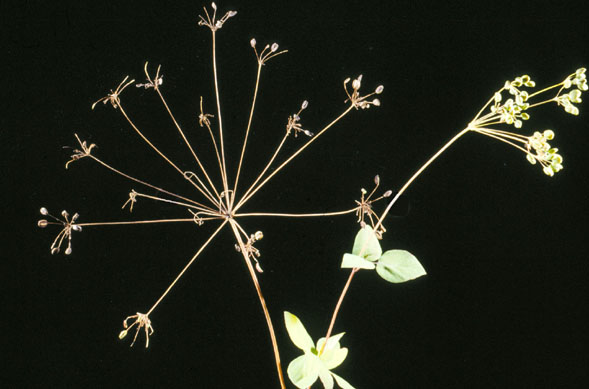
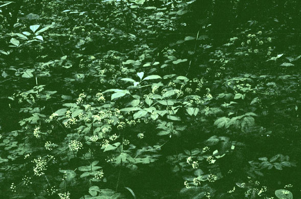
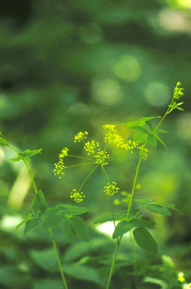
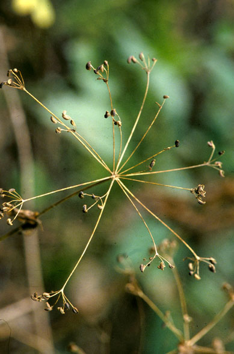

Taenidia integerrima
Family: Apiaceae
Yellow Pimpernel
Swink/Wilhelm #10



FLOWERING: End of April to early July.
SEED TIMING: End of July into September.
HABITAT: Wooded banks, open woods, transition zones between open woods and prairies.
DIAGNOSTIC FEATURES: 1 - 3 ft. Slender, smooth, open branched with untoothed leaves divided into 3 - 5 parts and again divided. Stems often have a whitish bloom. Flat cluster of small yellow flowers.
TO PICK: Small, dark brown seeds appear at tips of umbel and can be easily picked off. Often confused with Zizia aurea, but the carway-like seeds of Taenidia occur on a more open umbel.